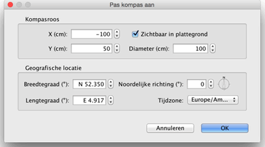

| Kompas en geografische locatie aanpassen | |||
Ieder nieuw huis heeft een kompasroos in de linkerbovenhoek van de plattegrond. Het kan worden verschoven door te slepen of met het toetsenbord na selecteren, zoals alle objecten in de plattegrond. Wanneer de kompasroos als enige is geselecteerd, kun je zijn formaat aanpassen of de noordzijde wijzigen met zijn indicatoren.
|

|
Wanneer de muisindicator op ëën van deze indicatoren rust, wijzigt hij om aan te geven dat je dit punt kunt slepen. De kompasroos en de geografische locatie kunnen ook worden gewijzigd in hun eigenschappenpaneel, dat verschijnt wanneer je dubbelklikt op de kompasroos of kiest voor Plattegrond > Bewerk kompas...  In dit paneel kun je de locatie, de diameter en de noordrichting van het kompas wijzigen, en kiezen of hij in de plattegrond moet worden weergegeven of niet. Je kunt ook de breedte- en lengtegraad van de geografische locatie kiezen, evenals de tijdzone van de regio. |
|